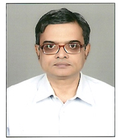

Prof. Xin-She Yang
Middlesex University, London
Talk Title: "Nature-Inspired Algorithms for Complex Optimization Problems"
Abstract: Nature-inspired algorithms such as the particle swarm optimization, bat algorithm and firefly algorithm have been widely used to solve problems in complex optimization, data mining and computational intelligence. The number of nature-inspired algorithms has increased significantly in recent years. However, it lacks some in-depth mathematical analysis of these algorithms. This talk summarizes the latest developments, and provide some analysis of these algorithms. In addition, some challenges and open problems will also be highlighted.
Brief Biography: Xin-She Yang obtained his DPhil in Applied Mathematics from the University of Oxford. He then worked at Cambridge University and National Physical Laboratory (UK) as a Senior Research Scientist. Now he is Reader at Middlesex University London, and a co-Editor of the Springer Tracts in Nature-Inspired Computing. He has published more than 250 peer-reviewed research papers with nearly 60,000 citations, and he has been on the prestigious list of highly-cited researchers (Clarivate Analytics/Web of Sciences) for five consecutive years (2016-2020).
Dr. Kenji Suzuki,
Director, Biomedical Artificial Intelligence Unit, Institute of Innovative Research (IIR), Tokyo Institute of Technology
Talk Title: "AI Doctor and Smart Medical Imaging with Deep Learning"
Abstract: Deep leaning becomes one of the most active areas of research in computer vision, pattern recognition, and medical imaging fields, because “learning from examples or data” is crucial to handling a large amount of data (“big data”) coming from imaging systems. I invented ones of the earliest deep-learning models for image processing, semantic segmentation, object enhancement, and classification of patterns in medical imaging. My group has been actively studying on deep learning in medical imaging in the past 25 years. In this talk, AI-aided diagnosis and smart medical imaging with deep learning are introduced, including 1) computer-aided diagnosis for lung cancer in CT, 2) distinction between benign and malignant lung nodules in CT, 3) polyp detection and classification in CT colonography, 4) separation of bones from soft tissue in chest radiographs, and 5) radiation dose reduction in CT and mammography.
Brief Biography: Kenji Suzuki, Ph.D. (Nagoya University) worked at Hitachi Medical Corp, Aichi Prefectural University, Japan, as a faculty member, in Department of Radiology, University of Chicago, as Assistant Professor, and Medical Imaging Research Center, Illinois Institute of Technology, as Associate Professor (Tenured). He is currently a Professor (Tenured) at Institute of Innovative Research, Tokyo Institute of Technology, Japan. He published more than 340 papers (including 115 peer-reviewed journal papers). He has been actively researching on deep learning in medical imaging and AI-aided diagnosis in the past 25 years, especially his early deep-learning model was proposed in 1994. His papers were cited 13,000 times, and his h-index is 52. He is inventor on 36 patents (including ones of earliest deep-learning patents), which were licensed to several companies and commercialized. He published 14 books and edited 12 journal special issues. He has been awarded numerous grants including NIH, NEDO, and JST grants, totaling $17M. He served as Editors of 40 leading international journals including Pattern Recognition. He chaired 98 international conferences. He received 21 awards, including 3 Best Paper Awards in leading journals.
Dr Richi Nayak
Science and Engineering Faculty, Queensland University of Technology, Brisbane
Talk Title: "Deep Learning Methods for Identifying Abusive Text in Social Media Posts"
Abstract: The proliferation of social media has created new norms in society. Incidents of abuse, hate, and misogyny are widely spread across social media platforms. In parallel, deep learning methods have shown exponential growth in analysing text data. In this talk, I will present the leading deep learning methods applied for text mining to identify abusive text in social media posts. I will show various deep architectures and transfer learning methods that facilitate this learning task.
Brief Biography: Richi Nayak is the Leader of the Applied Data Science Program at the Centre of Data Science and Associate Professor at Queensland University of Technology, Brisbane Australia. She has a driving passion to address pressing societal problems by innovating Data Analytics technologies underpinned by fundamental research in Data and Text Mining. Her research has resulted in the development of novel solutions to address industry-specific problems in Marketing, K-12 Education, Agriculture, Digital humanities, and Mining. She has made multiple advances in social media mining, deep neural networks, multi-view learning, matrix/tensor factorization, clustering and recommender systems. She has authored over 180 high-quality refereed publications that have attracted over 3400+ citations and h-index of 30. Her research leadership is recognised by multiple best paper awards and nominations at international conferences, QUT Postgraduate Research Supervision awards, and the 2016 Women in Technology Infotech Outstanding Achievement Award in Australia. She holds a PhD in Computer Science from the Queensland University of Technology and a Masters in Engineering from IIT Roorkee, India.
Prof. R. VENKATA RAO
Dean (Faculty Welfare), Sardar Vallabhbhai National Institute of Technology, India
Talk Title: "Review of the applications of metaheuristics in engineering"
Brief Biography:Dr. R. Venkata Rao is a Professor in the Department of Mechanical Engineering, S.V. National Institute of Technology, Surat, India. He has more than 28 years of teaching and research experience. He was deputed thrice to the Asian Institute of Technology, Bangkok, Thailand as a visiting Professor. He gained his B.Tech in 1988, M.Tech in 1991, and Ph.D. in 2002. He is the developer of Teaching Learning based Optimization(TLBO), Jaya and Rao Algorithms. Dr. Rao's research interests include: CAD/CAM, CIMS, advanced optimization methods, and fuzzy multiple attribute decision making methods. He has published about 300 research papers in national and international journals and conference proceedings and received national and international awards for best research work. He has been a reviewer to many national and international journals and on the editorial boards of few International journals. He had already authored four books entitled “Decision Making in the Manufacturing Environment Using Graph Theory and Fuzzy Multiple Attribute Decision Making Methods (Volume 1 (2007) and Volume 2 (2013))” and “Advanced Modeling and Optimization of Manufacturing Processes: International Research and Development (2010)” and “Mechanical Design Optimization Using Advanced Optimization Techniques (2012)” and all these books were published by Springer Verlag, UK.
Dr Noor Zaman Jhanjhi
Director Center for Smart society 5.0
Talk Title: "Smart Society 5.0 : Applications of Cybersecurity"
Brief Biography:Dr Noor Zaman Jhanjhi (NZ Jhanjhi) is currently working as Associate Professor, Director Center for Smart society 5.0 [CSS5], and Cluster Head for Cybersecurity cluster, at School of Computer Science and Engineering, Faculty of Innovation and Technology, Taylor’s University, Malaysia. He is supervising a great number of Postgraduate students, mainly in cybersecurity for Data Science. The cybersecurity research cluster has extensive research collaboration globally with several institutions and professionals. Dr Jhanjhi is Associate Editor and Editorial Assistant Board for several reputable journals, including IEEE Access Journal, PeerJ Computer Science, PC member for several IEEE conferences worldwide, and guest editor for the reputed indexed journals. Active reviewer for a series of top tier journals has been awarded globally as a top 1% reviewer by Publons (Web of Science). He has been awarded as outstanding Associate Editor by IEEE Access for the year 2020. He has high indexed publications in WoS/ISI/SCI/Scopus, and his collective research Impact factor is more than 350 points as of the first half of 2021. He has international Patents on his account, edited/authored more than 30 plus research books published by world-class publishers. He has great experience supervising and co-supervising postgraduate students. An ample number of PhD and Master students graduated under his supervision. He is an external PhD/Master thesis examiner/evaluator for several universities globally. He has completed more than 22 international funded research grants successfully. He has served as Keynote speaker for several international conferences, presented several Webinars worldwide, chaired international conference sessions. His research areas include Cybersecurity, IoT security, Wireless security, Data Science, Software Engineering, UAVs.
DR. SAROJ K. MEHER
INDIAN STATISTICAL INSTITUTE (ISI), BANGALORE CENTRE, INDIA
Talk Title: "Spatial Information-based Semisupervised Classification Model and its Application"
Brief Biography:Dr. Saroj K. Meher is an Associate Professor of the System Science and Informatics Unit at the Indian Statistical Institute, Bangalore Centre. He received the B.Sc. degree in Physics (Honours) from the Sambalpur University in 1990, M.Sc. degree in Physics with Electronics Specialization and Ph.D. degree in Science from the National Institute of Technology, Rourkela in 1997 and 2003, respectively. He worked as a Senior Research Scientist at Research & Development Units of various Industries in India for about three years and was awarded for his excellent contribution in some important projects. He was working as a Post Doctoral Fellow and Visiting Assistant Professor at Indian Statistical Institute, Kolkata in 2005-2006 and 2009-2010. He received the Sir. J. C. Bose memorial award of the Institute of Electronics and Telecommunication Engineers (IETE), India in the year 2003 and Orissa Young Scientist award for research in the field of Electronic Sciences & Technology for the year 2003 and Three Gold Medals from Institute of Engineers, Orissa. He is an elected Senior Member IEEE. His current research interest includes Image processing & analysis including remote sensing imagery, Machine Learning, Pattern Recognition, Granular Computing, Computational Intelligence/Soft Computing. He has contributed about 50 research papers in well known and prestigious archival journals, international refereed conferences and in the edited monograph volumes.
Dr. K K Shukla
Professor, Indian Institute of Technology (BHU), Varanasi, India

Talk Title: "Data Analytics for the Stream Mode"
Abstract: In the majority of practical scenarios, the entire data set is not available to the analyst as a batch. The data arrives in the form of one or more streams and the models have to be learned online in real time. The talk will give a birds eye view of the tools available for analysing such data streams.
Brief Biography:
Dr. K. K. SHUKLA is Professor of Computer Science and Engineering department, Indian Institute of Technology, BHU, Varanasi. He has 37 years of research and teaching experience. Professor Shukla has published more than 100 research papers in reputed journals and conferences. More than 10 PhDs have been awarded under his supervision. Professor Shukla has to his credit, many projects of national importance. Before joining IIT he was with Hindustan Aeronautics Ltd and Smiths Aerospace UK. He has been a member of the Indo-UK joint working group for the FADEC project. Professor Shukla is a Fellow of the Institution of Engineers, Fellow of the Institution of Electronics and Telecommunications Engineers and Senior Member, ISTE. He is a Fellow with the Institution of Engineers and the Institution of Electronics and Telecommunications Engineers, and a Senior Member of the ISTE and the Computer Society of India. Current fields of interest include pattern recognition, graph problems, wireless sensor networks, and machine learning.
Dr. Bhaskar Biswas
Indian Institute of Technology (Banaras Hindu University), Varanasi-221005 (India)
Talk Title: "link prediction on dynamic social networks"
Abstract:Link prediction is the process of detecting new or missing links in any network. This work focuses on link prediction in dynamic networks. One of the major challenges of the link prediction problem is to achieve high accuracy. One of the well-known methods for link prediction is the similarity- based method, which uses similarity-based score. The three widely used similarity-based indices are Local (L), Global (G), and Quasi-local (Q) for calculating similarity scores. In our proposed LGQ model, these wide categories of indices are used in different combinations( L, G, Q, LG, LQ, GQ, LGQ) for feature set generation that can be used with various machine learning techniques for link prediction. In local similarity indices, we have considered Common Neighbors (CN), Adamic/Adar Index (AA), Jaccard Coefficient (JC), and Preferential Attachment (PA). In global similarity indices, we have considered cos+, Average Commute Time (ACT), Shortest Path (SP), MFI (Matrix Forest Index), and in quasi-local indices, local path Index (LP), Path of Length 3 (L3). We have tested and validated our proposed model by conducting numerical simulations on six well-known dynamic network datasets. The results demonstrate that the proposed LGQ model and its variations outperform several baseline algorithms in terms of AUPR, F1 score, Balanced accuracy score (BAC), and AUC.
Brief Biography:
--